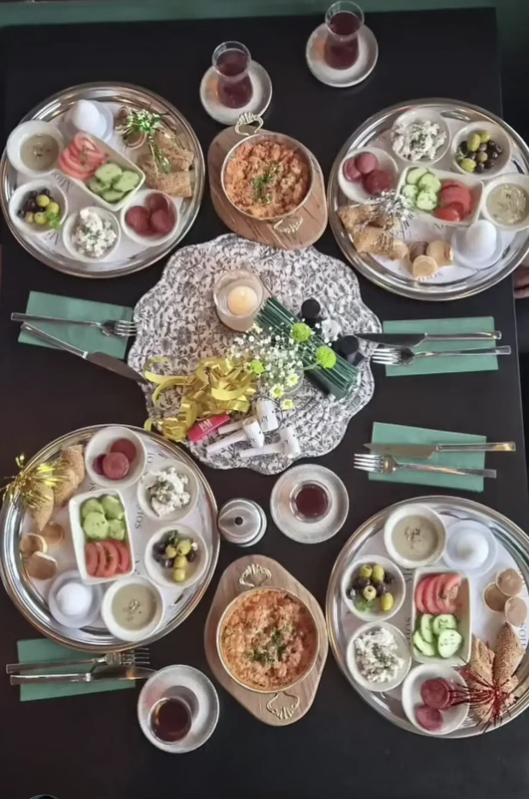
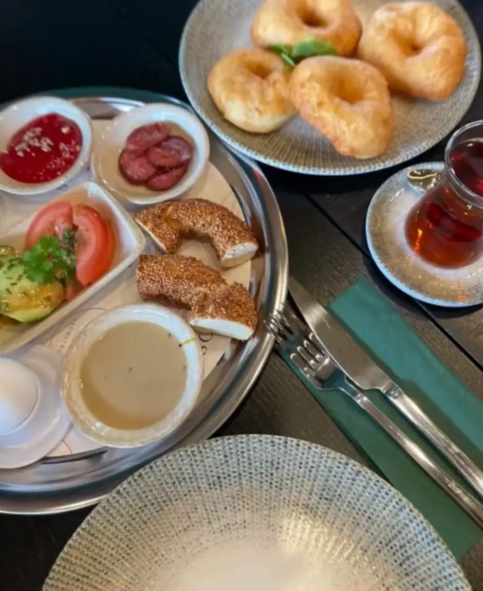
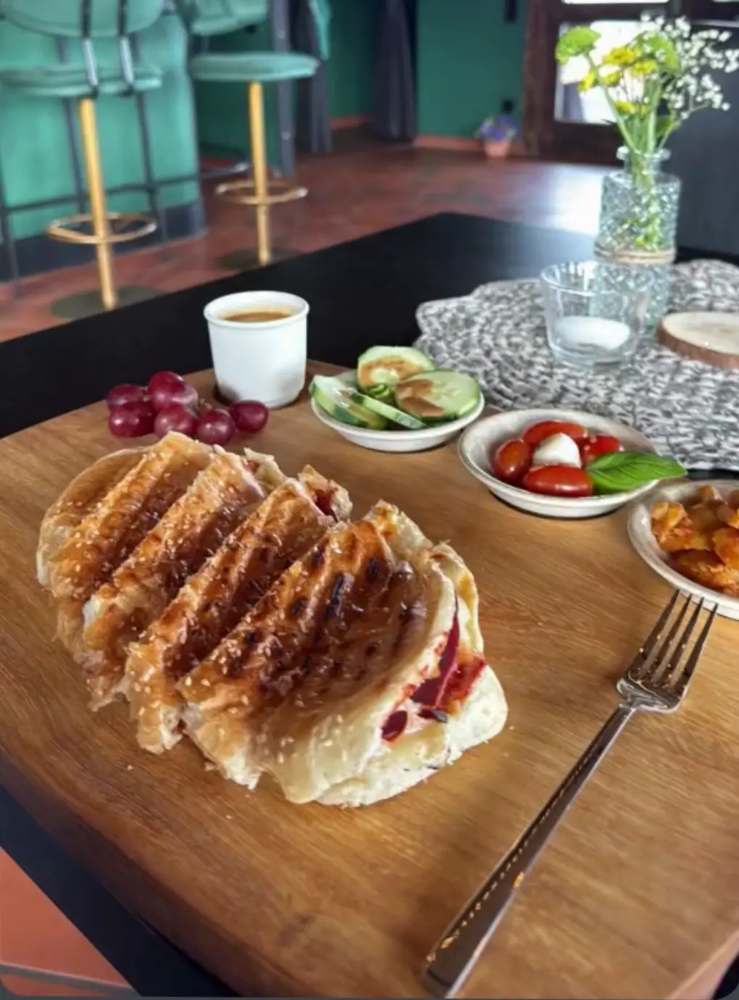
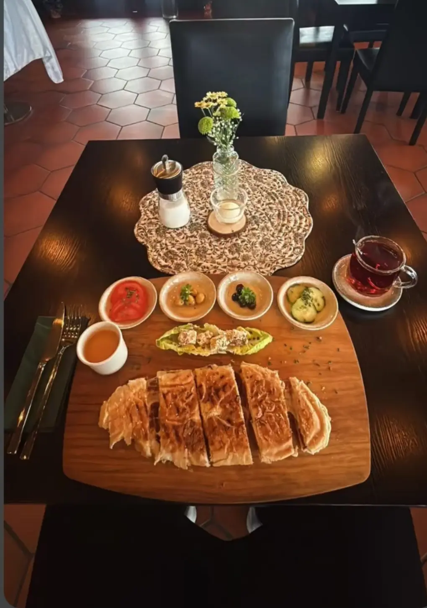

Café Mios · Eislingen
Das Wochenende
beginnt
am Tisch.
Offenes Frühstücksbuffet
Samstag & Sonntag · 9:30 – 14:00 Uhr
für 2 Personen 29,90 €
Reservieren: 0173 7948925

Frühstücks-ABC · Teil 1
S wie
Simit
Sesamkringel, außen knusprig, innen weich. Am besten noch warm, mit Tee dazu. Welches ist euer Lieblingsstück am Teller?
Café Mios

Heute im Café Mios
Süß oder
herzhaft?
Was nehmt ihr zum Frühstück?
Herzhaft
Süß
Umfrage-Sticker in der Story · Platz für den Sticker bleibt frei

Café Mios · frisch gebacken
Börek zum
Frühstück.
Haldenstraße 90 · Eislingen
Sa & So 9:30 – 14:00 Uhr
Tisch reservieren
Reel · 30 Sekunden
So sieht
Frühstück
bei uns aus.
Café Mios